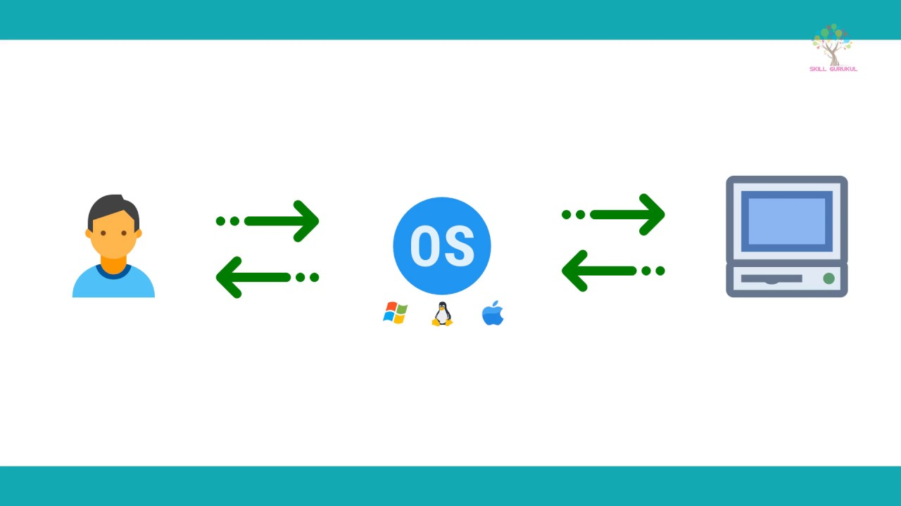

An operating system is the most important software that runs on a computer. It manages the computer's memory and processes, as well as all of its software and hardware. It also allows you to communicate with the computer without knowing how to speak the computer's language. Without an operating system, a computer is useless.
Your computer's operating system (OS) manages all of the software and hardware on the computer. Most of the time, there are several different computer programs running at the same time, and they all need to access your computer's central processing unit (CPU), memory, and storage. The operating system coordinates all of this to make sure each program gets what it needs.
